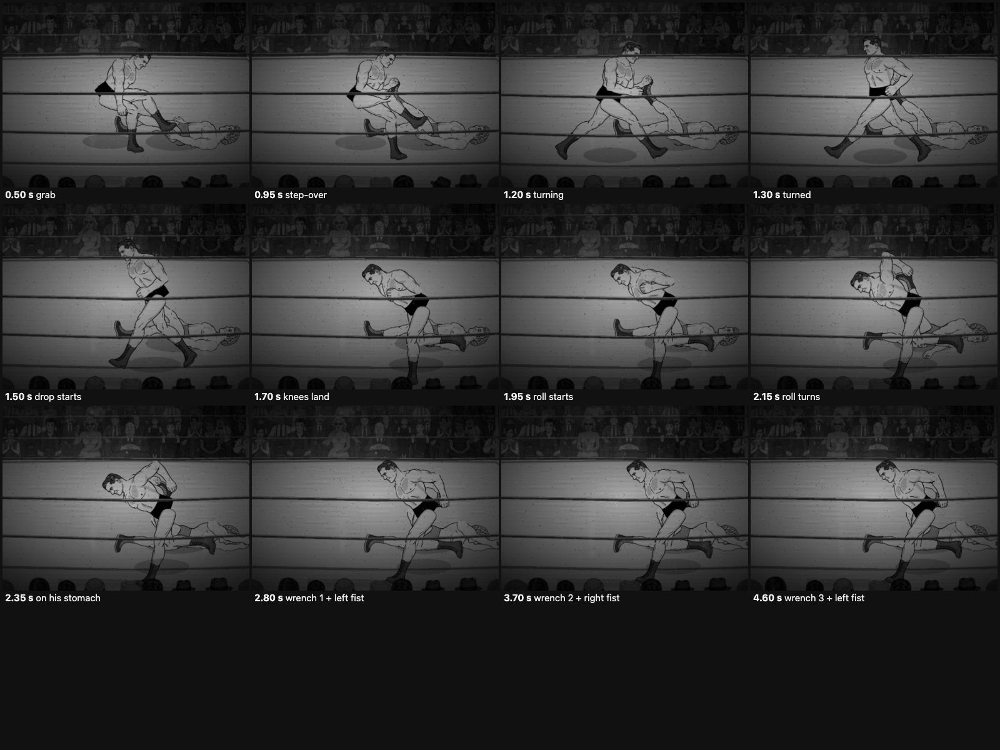
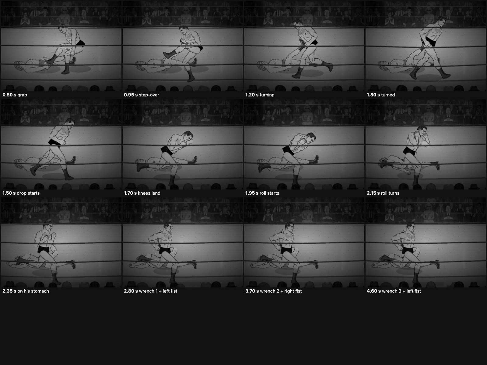
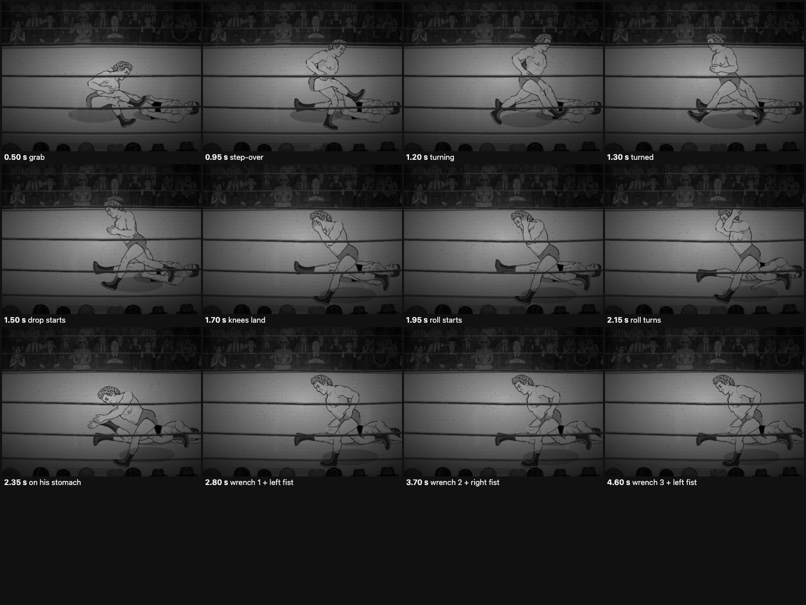
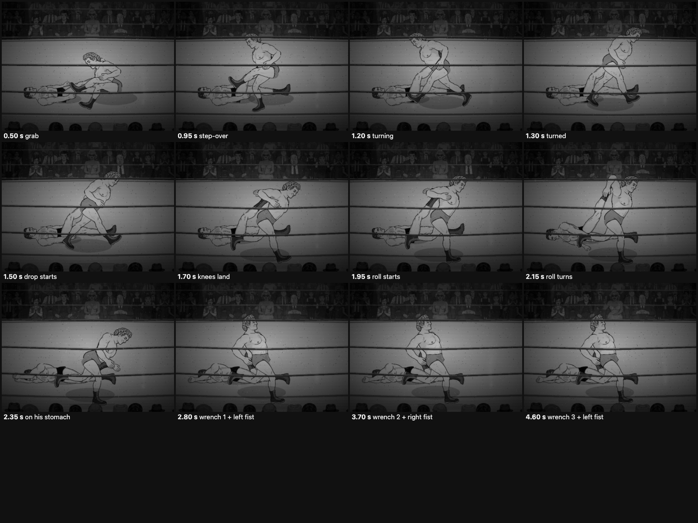

Foreground revision: the entire attacker draws in front of the victim, preserving each wrestler’s own body and garment stack. Same poses, positions and timing as T3.0c. This replaces the interleaved leg stack at Derek’s request. Previous preview. The trapped boot can be hidden by the attacker; assess that tradeoff in motion.
Derek's direction: the attacker falls onto both knees with the man's leg between his legs, then wrenches the foot while the man, on his stomach, pounds the canvas. Each clip: grab, step-over, a turn (the attacker mirrors at a standing straddle over the leg), a 0.3 s knee drop, the man rolls from his back to his stomach (mirrors at a straight-limbed instant), then three wrenches, each with a fist strike on the peak, alternating arms. Hands ride the clip grip channel the whole way. Review preview, not a playable move; nothing here is approved. Videos loop only the move. Misses are listed first under each case.

Whole attacker in front: 332/332 frames; stack failures 0.
Hands on the foot, every frame from the grab (0.02 s) to the end: worst 3.2 px at 2.02 s; 0 frames over 6 px.
Turn (attacker mirrors at his straddle, 1.242 s): 0.3 s long; biggest one-frame joint move 50.9 px at 1.117 s (median frame 4.7). Roll (man's back to his stomach, mirrors at 2.092 s): 0.5 s long, starts 0.15 s after the knees land; biggest one-frame joint move 14.8 px at 2.233 s (median 5.1).
Knee drop: 0.3 s (1.4 to 1.7 s); standing knees 28.1 / 28.6 px above the mat; hips fall 16.2 px; knees reach the mat (≤3 px) on frames 102 / 102 (near / far); largest one-frame joint move in the drop 9.2 px. Knees above the mat during the hold: near -1.8..4.1, far -2.8..5.2 px; knee sideways travel 5.8 / 4.2 px.
| wrench | peak | foot travel px (start to peak) | foot path px | hips back px | knees at peak (near / far) | boot px covered |
|---|---|---|---|---|---|---|
| 1 | 2.80 s | 37.5 | 38.5 | 21.8 | 4 / -2.8 | 380 |
| 2 | 3.70 s | 37.5 | 37.4 | 21.8 | 4 / -2.8 | 380 |
| 3 | 4.60 s | 37.5 | 53.3 | 21.8 | 4 / -2.8 | 380 |
| strike | arm | lift px | lands at s | frames off the peak | contact frames |
|---|---|---|---|---|---|
| 1 | left (near) | 36 | 2.8 | 0 | 24 |
| 2 | right (far) | 36 | 3.7 | 0 | 25 |
| 3 | left (near) | 36 | 4.6 | 0 | 25 |
Fists over the whole sell: near 2 strike(s), far 1; deepest 2 / 2 px (0..4 = on the mat). Boot: 344..497 of 795 px hidden by the attacker's body over the wrenches (candidate kneel still: 99 of 788).

Whole attacker in front: 332/332 frames; stack failures 0.
Hands on the foot, every frame from the grab (0.02 s) to the end: worst 11.8 px at 2.62 s; 6 frames over 6 px.
Turn (attacker mirrors at his straddle, 1.242 s): 0.3 s long; biggest one-frame joint move 28.5 px at 1.117 s (median frame 5.1). Roll (man's back to his stomach, mirrors at 2.092 s): 0.5 s long, starts 0.15 s after the knees land; biggest one-frame joint move 14.8 px at 2.233 s (median 5.1).
Knee drop: 0.3 s (1.4 to 1.7 s); standing knees 33.7 / 28.4 px above the mat; hips fall 35 px; knees reach the mat (≤3 px) on frames 102 / 102 (near / far); largest one-frame joint move in the drop 12.6 px. Knees above the mat during the hold: near -1.9..5, far -2.8..4.2 px; knee sideways travel 4.1 / 6.1 px.
| wrench | peak | foot travel px (start to peak) | foot path px | hips back px | knees at peak (near / far) | boot px covered |
|---|---|---|---|---|---|---|
| 1 | 2.80 s | 40 | 83.9 | 0 | 3.6 / -2 | 606 |
| 2 | 3.70 s | 40 | 86.3 | 0 | 3.6 / -2 | 606 |
| 3 | 4.60 s | 40 | 63.5 | 0 | 3.6 / -2 | 606 |
| strike | arm | lift px | lands at s | frames off the peak | contact frames |
|---|---|---|---|---|---|
| 1 | left (near) | 35 | 2.8 | 0 | 24 |
| 2 | right (far) | 36 | 3.7 | 0 | 25 |
| 3 | left (near) | 35 | 4.6 | 0 | 25 |
Fists over the whole sell: near 2 strike(s), far 1; deepest 2 / 2 px (0..4 = on the mat). Boot: 0..790 of 800 px hidden by the attacker's body over the wrenches (candidate kneel still: 108 of 803).

Whole attacker in front: 332/332 frames; stack failures 0.
Hands on the foot, every frame from the grab (0.02 s) to the end: worst 10.9 px at 4.87 s; 7 frames over 6 px.
Turn (attacker mirrors at his straddle, 1.242 s): 0.3 s long; biggest one-frame joint move 36.7 px at 1.117 s (median frame 2.5). Roll (man's back to his stomach, mirrors at 2.092 s): 0.5 s long, starts 0.15 s after the knees land; biggest one-frame joint move 21.9 px at 2.333 s (median 6.9).
Knee drop: 0.3 s (1.4 to 1.7 s); standing knees 32.9 / 34.6 px above the mat; hips fall 25.3 px; knees reach the mat (≤3 px) on frames 102 / 102 (near / far); largest one-frame joint move in the drop 9.2 px. Knees above the mat during the hold: near -0.9..4, far -2.5..3.6 px; knee sideways travel 4.4 / 6.3 px.
| wrench | peak | foot travel px (start to peak) | foot path px | hips back px | knees at peak (near / far) | boot px covered |
|---|---|---|---|---|---|---|
| 1 | 2.80 s | 47.1 | 62.6 | 4.7 | 4 / -2 | 402 |
| 2 | 3.70 s | 47.1 | 52.5 | 4.7 | 4 / -2 | 402 |
| 3 | 4.60 s | 47.1 | 55.3 | 4.7 | 4 / -2 | 402 |
| strike | arm | lift px | lands at s | frames off the peak | contact frames |
|---|---|---|---|---|---|
| 1 | left (near) | 35 | 2.8 | 0 | 24 |
| 2 | right (far) | 35 | 3.7 | 0 | 25 |
| 3 | left (near) | 35 | 4.6 | 0 | 25 |
Fists over the whole sell: near 2 strike(s), far 1; deepest 2 / 2 px (0..4 = on the mat). Boot: 0..485 of 869 px hidden by the attacker's body over the wrenches (candidate kneel still: 0 of 864).

Whole attacker in front: 332/332 frames; stack failures 0.
Hands on the foot, every frame from the grab (0.02 s) to the end: worst 9.6 px at 2.08 s; 5 frames over 6 px.
Turn (attacker mirrors at his straddle, 1.242 s): 0.3 s long; biggest one-frame joint move 33 px at 1.117 s (median frame 3.5). Roll (man's back to his stomach, mirrors at 2.092 s): 0.5 s long, starts 0.15 s after the knees land; biggest one-frame joint move 21.9 px at 2.333 s (median 6.9).
Knee drop: 0.3 s (1.4 to 1.7 s); standing knees 39.3 / 42.6 px above the mat; hips fall 34.9 px; knees reach the mat (≤3 px) on frames 102 / 102 (near / far); largest one-frame joint move in the drop 8.5 px. Knees above the mat during the hold: near -1.7..6, far -2..4.9 px; knee sideways travel 4.7 / 3.8 px.
| wrench | peak | foot travel px (start to peak) | foot path px | hips back px | knees at peak (near / far) | boot px covered |
|---|---|---|---|---|---|---|
| 1 | 2.80 s | 39.8 | 43.6 | 6.3 | 4 / -2 | 269 |
| 2 | 3.70 s | 39.8 | 42.5 | 6.3 | 4 / -2 | 269 |
| 3 | 4.60 s | 39.8 | 43.6 | 6.3 | 4 / -2 | 269 |
| strike | arm | lift px | lands at s | frames off the peak | contact frames |
|---|---|---|---|---|---|
| 1 | left (near) | 35 | 2.8 | 0 | 24 |
| 2 | right (far) | 35 | 3.7 | 0 | 25 |
| 3 | left (near) | 35 | 4.6 | 0 | 25 |
Fists over the whole sell: near 2 strike(s), far 1; deepest 2 / 2 px (0..4 = on the mat). Boot: 269..849 of 869 px hidden by the attacker's body over the wrenches (candidate kneel still: 0 of 863).